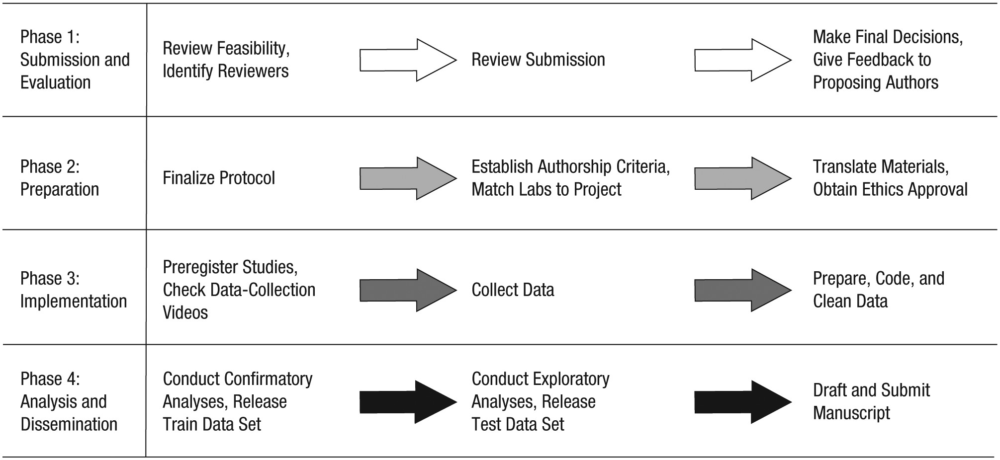

The Psychological Science Accelerator: Advancing psychology through a distributed collaborative network
Concerns about the veracity of psychological research have been growing. Many findings in psychological science are based on studies with insufficient statistical power and nonrepresentative samples, or may otherwise be limited to specific, ungeneralizable settings or populations. Crowdsourced research, a type of large-scale collaboration in which one or more research projects are conducted across multiple lab sites, offers a pragmatic solution to these and other current methodological challenges. The Psychological Science Accelerator (PSA) is a distributed network of laboratories designed to enable and support crowdsourced research projects. These projects can focus on novel research questions or replicate prior research in large, diverse samples. The PSA’s mission is to accelerate the accumulation of reliable and generalizable evidence in psychological science. Here, we describe the background, structure, principles, procedures, benefits, and challenges of the PSA. In contrast to other crowdsourced research networks, the PSA is ongoing (as opposed to time limited), efficient (in that structures and principles are reused for different projects), decentralized, diverse (in both subjects and researchers), and inclusive (of proposals, contributions, and other relevant input from anyone inside or outside the network). The PSA and other approaches to crowdsourced psychological science will advance understanding of mental processes and behaviors by enabling rigorous research and systematic examination of its generalizability.
